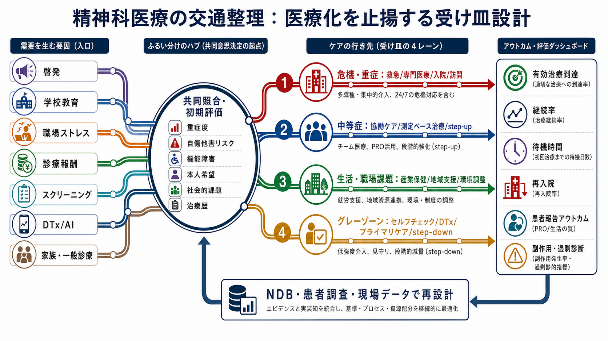

JSPN 2026 symposium draft
精神科医療における交通整理
精神疾患患者の増加と医療の受け皿について、啓発・診断・一般診療・産業保健・DTx/AI・専門医療を health services design として接続するための発表ドラフトです。
5分版動画
中心図

収録物
slides.html: ブラウザで動く単体HTMLスライド。jspn2026_traffic_receiving_system_5min.mp4: 約5分のナレーション付き動画。traffic_receiving_system_2026-06-05.png: 発表の中心図。